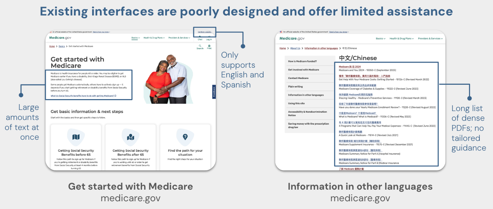

Medicare Compass is an educational website designed to support immigrants on their Medicare journey. Below is a peek into our process of how we brought the idea to life.
The idea for Medicare Compass came out of a desire to support our loved ones in an increasingly important aspect of their lives: managing their health into old age. As a team of immigrants and children of immigrants, we have seen firsthand the challenges of navigating a new country with few existing connections and an abundance of language and cultural barriers. Layer on the notoriously complex and expensive US healthcare system, a system that even native-born Americans have difficulty navigating, and the challenge feels insurmountable.
This problem shows itself in the statistics. Immigrants are more likely to be uninsured, have no usual source of care other than the emergency room, and to skip or postpone care in the last 12 months compared to naturalized citizens. The idea of tackling Medicare enrollment came to mind after Lilly saw her mom, a 64-year old Chinese immigrant, attend 40 hours of webinar classes, meet with three insurance agents, and call several of her friends to try to determine which Medicare plan she should choose. Though Lilly’s mom had the time and resources to piece together an informed decision, we knew many immigrants are not so fortunate and fall trap to lifetime penalties, denial of coverage, and unaffordable medical bills.
Our first step in our design process was to interview five other immigrants who had recently gone through the Medicare enrollment process. We noticed the following recurring pain points:
When asked how they went about starting to learn about Medicare, almost all interviewees described a feeling of “I didn’t even know where to begin.” Most interviewees were used to choosing from the 1-3 health insurance plans their employers offered, rather than comparing the dozens of different pathways you can take with Medicare coverage. Due to lack of connections in the US, interviewees had not seen older family members go through Medicare enrollment and had no idea what to expect or what questions to ask.
“I felt scared and totally lost when starting the Medicare process.”
– Mr. Liu, age 67 🇹🇼
I wish the health agent could have explained more to me… she didn’t give me much education and I also don’t know how to ask questions. I was just enrolled automatically and didn’t get the chance to really explore.
– Ms. Sun, age 68 🇨🇳
I thought [Medicare] would be simple and cover everything. Medicare was not that simple.
– Ms. Zhao, age 64 🇨🇳